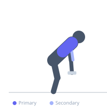

Exercise guide / Chest-Supported Dumbbell Row
Chest-Supported Dumbbell Row
The chest-supported dumbbell row eliminates lower back involvement by bracing the chest on an inclined bench, allowing complete isolation of the upper back musculature. Because the spine is supported, there is no temptation to extend the torso to generate momentum, making this one of the most reliable exercises for targeting the rhomboids, middle trapezius, and rear deltoids independently.
Primary muscles
rhomboid major
trapezius middle
deltoid posterior
Secondary muscles
latissimus dorsi
trapezius lower
biceps brachii short head
Stabilizers
infraspinatus
teres minor
Equipment
Dumbbell (Fixed)
Adjustable Bench (Incline / Decline)


Starting position
- Set an adjustable bench to a 30–45 degree incline. Lie prone (face down) on the bench with the chest and stomach resting on the pad. Let both arms hang straight down toward the floor, each holding a dumbbell with a neutral or pronated grip.
Setup
- Set the bench incline to approximately 30–45 degrees. Choose dumbbells lighter than you would use for a standard dumbbell row since there is no lower back contribution. Position feet flat on the floor or on the bench footrest for stability.
Steps
- Step 1: Begin with arms hanging directly below the shoulders, fully extended.
- Step 2: Retract the scapulae and row both dumbbells simultaneously toward the lower ribcage.
- Step 3: Drive the elbows up and back, keeping them close to or slightly outside the torso.
- Step 4: At the top, squeeze the shoulder blades together firmly.
- Step 5: Slowly lower the dumbbells back to the starting position, fully extending the arms and protracting the scapulae.
Coaching cues
- Squeeze a pencil between your shoulder blades at the top
- Row to your hip pockets, not your armpits
- Keep the chest pinned to the pad throughout
Breathing
- Exhale as you row the dumbbells up. Inhale as you lower them.
Range of motion
- Full hang at the bottom with scapular protraction to maximum retraction at the top. This movement has a relatively short ROM — prioritize muscle contraction quality.
Tempo
- 2-1-2-0 (2s pull, 1s squeeze, 2s lower)
Common mistakes
- Lifting the chest off the pad — this negates the purpose of the chest support
- Using a grip that internally rotates the shoulder (overgripping with excessive wrist flexion)
- Insufficient range of motion by not fully protracting and retracting the scapulae
Safety
- Ensure the bench is stable on the floor before loading it with your body weight and dumbbells
- Avoid craning the neck — keep the head in a neutral position aligned with the spine
Training
- hypertrophy: 10–15 reps
- endurance: 15–20 reps
- hypertrophy: 3–4 sets
- endurance: 2–3 sets
- Rest: {'hypertrophy': 75, 'endurance': 45}